Monitorización de tres máquinas virtuales mediante Prometheus y Grafana
Antes de realizar esta práctica se recomienda realizar la práctica anterior: Crear un monitor sencillo con Grafana en Ubuntu Sever que tiene instrucciones y explicaciones completas.
1 Objetivo de la práctica
En esta práctica configuraremos un entorno de monitorización donde una máquina Ubuntu Server actuará como servidor de monitorización utilizando Prometheus y Grafana en contenedores Docker. Desde esta máquina monitorizaremos:
Una máquina Windows 10 Pro mediante Windows Exporter (como servicio).
Una máquina Ubuntu Server mediante Node Exporter (sin Docker).
El acceso a Grafana desde el host se realizará mediante SSH port forwarding .
2 Arquitectura del escenario
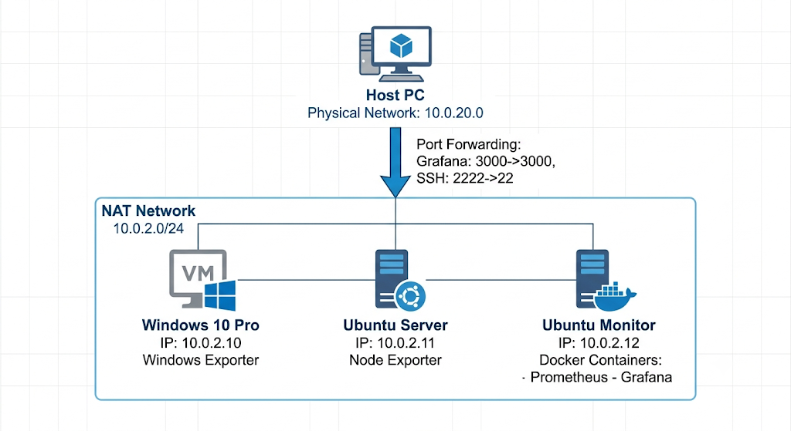
3 Configuración de IP fija en las máquinas
Se da por hecho que se han creado las máquinas virtuales y que todas están conectadas a la misma Red NAT en VirtualBox.
3.1 Windows 10 Pro
Abrir Configuración → Red e Internet → Cambiar opciones del adaptador
Clic derecho en el adaptador → Propiedades
Seleccionar Protocolo de Internet versión 4 (TCP/IPv4)
Configurar:
IP: 10.0.2.10
Máscara: 255.255.255.0
Puerta de enlace: 10.0.2.1
DNS: 8.8.8.8
La Red NAT de VirtualBox sí proporciona salida a Internet por defecto. Si al configurar la IP estática en Windows te quedas sin conexión, asegúrate de haber introducido correctamente el DNS (8.8.8.8). Además, a veces Windows se “atasca” al cambiar de IP dinámica a manual; si eso pasa, simplemente deshabilita el adaptador de red y vuélvelo a habilitar para que aplique bien la nueva ruta.
Comprobar conectividad:
ping 1.1.1.13.2 3.2 Ubuntu Server monitorizado
Durante la instalación del sistema o mediante Netplan (como vimos en prácticas anteriores).
Seleccionar Configurar red manualmente
Asignar:
IP: 10.0.2.11
Máscara: 255.255.255.0
Gateway: 10.0.2.1
DNS: 8.8.8.8
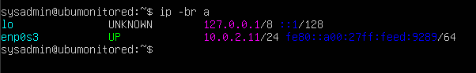
Comprobar conectividad con la primera máquina, para ello haremos ping desde Windows a esta.
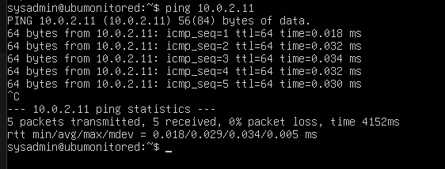
3.3 Ubuntu Server monitorización (Prometheus + Grafana)
Durante la instalación:
IP: 10.0.2.12
Máscara: 255.255.255.0
Gateway: 10.0.2.1
DNS: 8.8.8.8
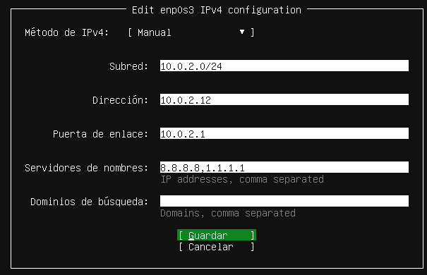
Comprobar conectividad cruzada: Desde Windows: ping 10.0.2.11 y ping 10.0.2.12 Desde Ubuntu deberíamos poder hacer ping a la otra Ubuntu. Nota: Los pings hacia Windows pueden fallar porque el Firewall de Windows bloquea ICMP (Ping) por defecto.
Recuerda que si no configuras la ip durante la instalación o necesitas cambiar la configuración luego, puedes usar la configuración netplan
como se explicó en la practica anterior
4 Instalación de Windows Exporter (como servicio)
Descargar el instalador MSI desde: https://github.com/prometheus-community/windows_exporter/releases (github.com in Bing)
El archivo
.msi(Microsoft Installer): Está programado específicamente por los creadores de Windows Exporter para hacer todo el trabajo sucio. Cuando le das a “Siguiente > Siguiente”, el instalador automáticamente coge el programa, lo esconde en el sistema, crea un Servicio de Windows oficial que arranca solo cada vez que enciendes el ordenador, y lo deja funcionando en segundo plano.El archivo
.exe(Ejecutable binario): Si descargas el.exey le haces doble clic, se abrirá una ventana de consola negra (MS-DOS). El exporter funcionará, sí, pero en el momento en que cierres esa ventana negra o reinicies el ordenador, el monitorizador se apagará.
Ejecutar el instalador:
Aceptar licencia
Seleccionar los collectors por defecto
Activar Firewal Exception!
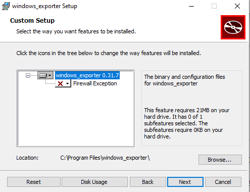
Durante la instalación te dice qué puerto va a usar, luego vamos a necesitar este puerto para configurar prometheus en la máquina monitor: 9182
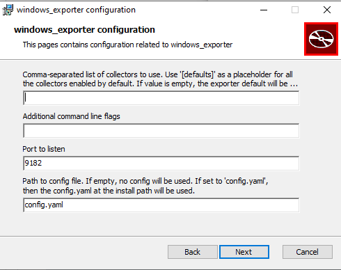
Verificar que el servicio está activo:
En un navegador introduce localhost:9182/metrics
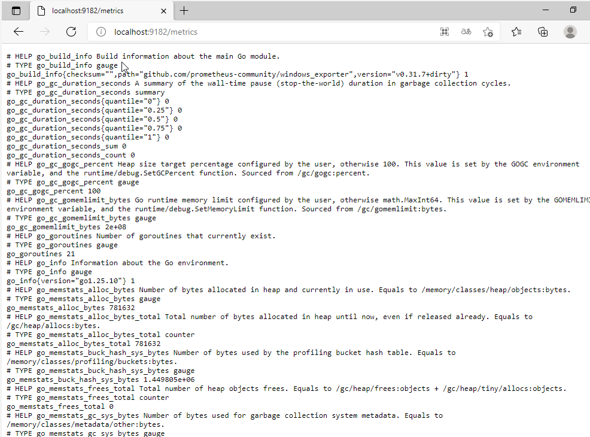
o en PowerShell (no la consola)
Get-Service -Name windows_exporter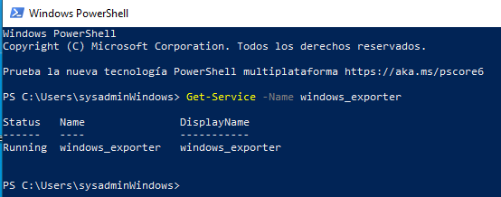
Comprobar que expone métricas. Desde PowerShell
Invoke-WebRequest http://localhost:9182/metrics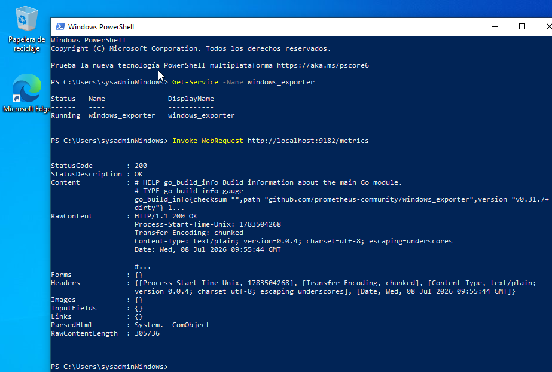
5 Instalación de Node Exporter (Nativo)
En la práctica anterior no instalamos node exporter en la maquina virtual, sino que lo hicimos mediante una imagen docker. En esta ocasión vamos a inslalarlo directamente sobre el SO de la máquina virtual:
En la máquina 10.0.2.11:
sudo apt update
sudo apt upgrade
sudo apt install prometheus-node-exporter -y Comprobar que está activo:
systemctl status prometheus-node-exporter 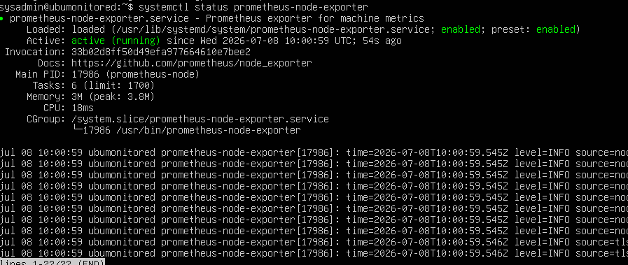
Comprobar métricas:
curl http://localhost:9100/metrics 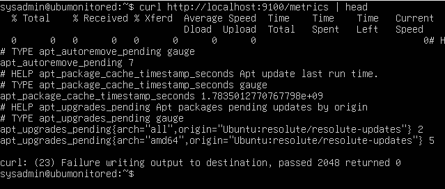
6 Redireccionamiento de puertos
Para facilitar la configuración, vamos a conectarnos al servidor principal de monitorización (10.0.2.12) desde nuestro Host (Windows real) usando SSH.
El problema es que en Red NAT el Host no tiene conectividad directa con las IP internas de las máquinas virtuales. Necesitamos configurar una redirección de puertos en VirtualBox:
Ve a la configuración de la Red NAT en VirtualBox.
Añade una regla de reenvío de puertos:
Host IP: {la ip del host} (o vacío 0.0.0.0)| Host Port:
2222(vale cualquier puerto que no esté en uso)Guest IP:
10.0.2.12| Guest Port:22(el puerto 22 es el puerto SSH por defecto)
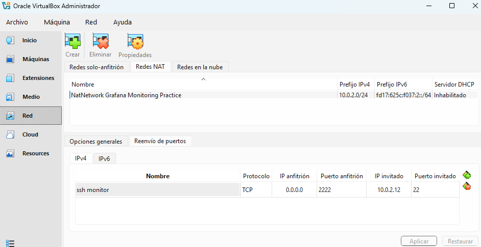
Ahora podemos conectarnos desde nuestro Host usando el puerto redirigido:
ssh -p 2222 sysadmin@localhostVer conexiones y puertos activos (TCP y UDP): Usa ss -tuna (donde -t es TCP, -u es UDP, -n muestra los puertos en números y -a todas las conexiones).
Saber qué programas están usando esos puertos: Usa el comando lsof: sudo lsof -i -P -n | grep LISTEN
7 Despliegue de Prometheus y Grafana (Docker)
En la máquina 10.0.2.12:
7.1 Instalar Docker y Docker Compose
Aquí usaremos docker.io, que es la versión mantenida por Ubuntu. Es más rápida de instalar para un laboratorio. Para entornos de producción críticos, se recomienda el método largo de la práctica anterior (instalando docker-ce desde el repositorio oficial).
sudo apt update
sudo apt install docker.io docker-compose-plugin -y
sudo systemctl enable --now docker
sudo usermod -aG docker $USER (Recuerda que para usar Docker sin sudo debes cerrar sesión exit y volver a entrar).
7.2 Estructura y Configuración
mkdir monitoring
cd monitoring 7.3 Crear archivo de configuración de prometheus
en el directorio de trabajo creamos el archivo prometheus.yml mediante nano prometheus.yml con el siguiente contenido:
global:
scrape_interval: 5s
scrape_configs:
- job_name: 'prometheus'
static_configs:
- targets: ['localhost:9090']
- job_name: 'node_exporter_ubuntu'
static_configs:
- targets: ['10.0.2.11:9100']
labels:
sistema: "linux"
servidor: "ubuntu-server"
- job_name: 'windows_exporter'
static_configs:
- targets: ['10.0.2.10:9182']
labels:
sistema: "windows"
servidor: "windows-vm"Al contrario que en la práctica anterior aqui usamos las ips de las maquinas y su puerto en lugar de usar el nombre del contenedor como usamos en la práctica de monitorización anterior. Además vamos a añadir etiquetas para poder identificar facilmente las máquinas dentro de grafana.
7.4 Crear archivo docker-compose.yml
nano docker-compose.yml
services:
prometheus:
image: prom/prometheus:latest
container_name: prometheus
ports:
- "9090:9090"
volumes:
- ./prometheus.yml:/etc/prometheus/prometheus.yml:ro
- prometheus-data:/prometheus
command:
- "--config.file=/etc/prometheus/prometheus.yml"
- "--storage.tsdb.retention.time=15d"
restart: unless-stopped
grafana:
image: grafana/grafana:latest
container_name: grafana
ports:
- "3000:3000"
environment:
- GF_SECURITY_ADMIN_USER=admin
- GF_SECURITY_ADMIN_PASSWORD=Admin123*
volumes:
- grafana-data:/var/lib/grafana
restart: unless-stopped
volumes:
prometheus-data:
grafana-data:7.5 Levantar los contenedores
docker compose up -d 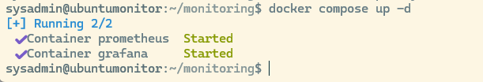
8 Acceso a grafana desde el host
Grafana se maneja desde una interfaz gráfica, y el ubuntu server que estamos usando para monitorear no permite usar interfaz gráfica, asi que nos tenemos que conectar desde el host que está en Windows. Tenemos varias opciones
8.1 Mediante redirección de puertos en la interfaz gráfica de Virtual Box
Podemos hacerlo creando una nueva redirección de puertos en la que el puerto X del host se conecte de forma remota al puerto de grafana del servidor monitor.
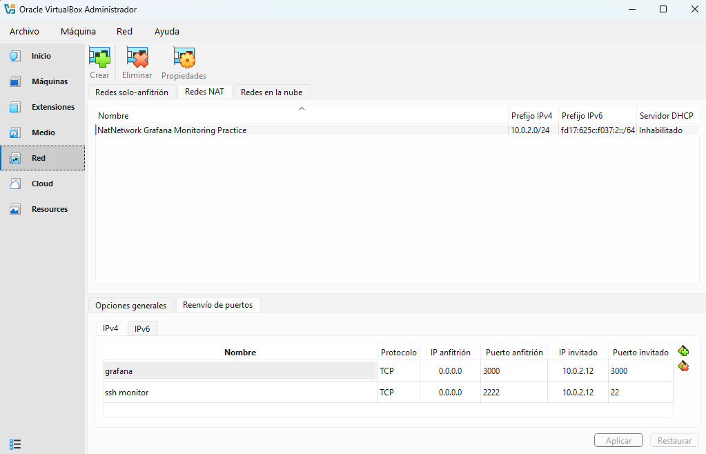
Ahora en el ordenador host podemos conectarnos a grafana usando el navegador: http://localhost:3000/
Si además queremos conectarnos a la interfaz de prometheus desde el host tendremos que redireccionar también ese puerto:
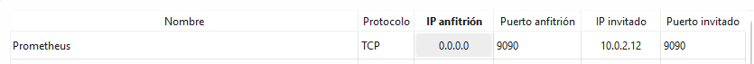
Pero esto no es necesario para que prometheus funcione dentro de grafana, sólo si queremos ver prometheus directamente.
8.2 Acceso Seguro con Túnel SSH (SSH Port Forwarding)
Otra opción es usar la shell en la maquina host.
Para abrir la interfaz web de Grafana o Prometheus sin exponer esos puertos a Internet ni configurar reglas adicionales en VirtualBox, podemos crear un túnel seguro a través de SSH desde nuestro PC Host.
Abre otra terminal en tu Windows (Host) y ejecuta:
ssh -p 2222 -L 3000:localhost:3000 -L 9090:localhost:9090 sysadmin@localhost Explicación: Nos conectamos al puerto 2222 (que VirtualBox redirige a la máquina .12) y hacemos que nuestros puertos locales 3000 y 9090 viajen encriptados por el túnel hasta los servicios de la máquina virtual.
Ahora puedes abrir en tu navegador (en tu PC físico):
Prometheus:
http://localhost:9090Grafana:
http://localhost:3000
9 Importación de dashboards en Grafana
Crear un nuevo origen de datos para conectar grafana a prometheus
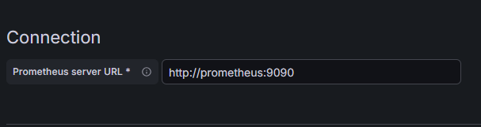
Entrar en Grafana → Dashboards → Import
Importar:
Dashboard oficial de Node Exporter → ID 1860
Dashboard oficial de Windows Exporter → ID 14694
Seleccionar la fuente de datos Prometheus.
10 Verificación de métricas
10.0.1 Windows
CPU usage
Memory
Disk I/O
Network
10.0.2 Ubuntu monitorizado
CPU
Load average
Filesystem
Network